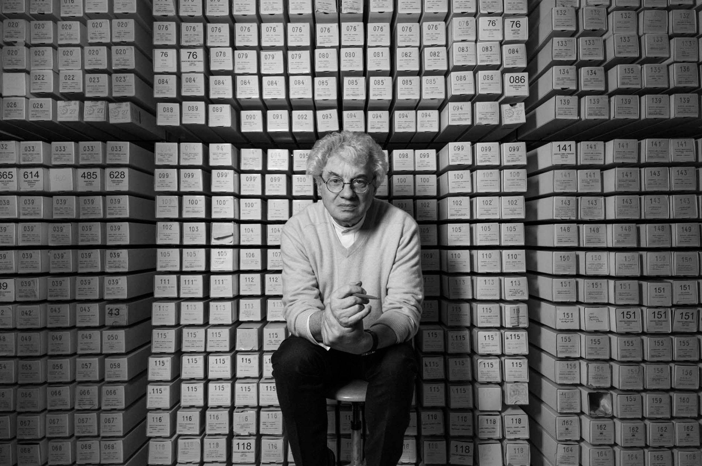
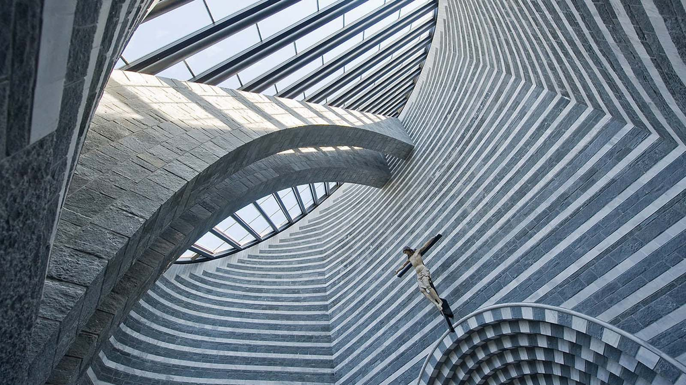

Born in Mendrisio, Ticino, on April 1, 1943. After an apprenticeship in Lugano, he first attends the Art College in Milan and then studies at the University Institute of Architecture in Venice. Directed by Carlo Scarpa and Giuseppe Mazzariol he receives his professional degree in 1969. While studying in Venice, he has the opportunity to meet and work for
Le Corbusier and
Louis I. Kahn.
Botta’s professional career begins in 1970 in Lugano. Known for his single-family houses in Ticino, his work encompasses many other building types including schools, banks, administration buildings, libraries, museums and sacred buildings. Along his work he teaches extensively in giving lectures, seminars and courses in architectural schools in Europe, Asia, North- and South America.
Since the beginning of his career, his work has been recognized internationally and honored with prestigious awards, besides being presented in numerous exhibitions and publications. In 1996, he is one of the founders of the Academy of architecture of the Università della Svizzera Italiana in Mendrisio, where he still teaches and held the directorship.
His steady professional and educational commitment, his role as chairman of the award jury of the BSI Architectural Foundation and his current involvement in the realization of the Theatre of architecture, allow him to impart his knowledge of a profession that is, first and foremost, his passion.

